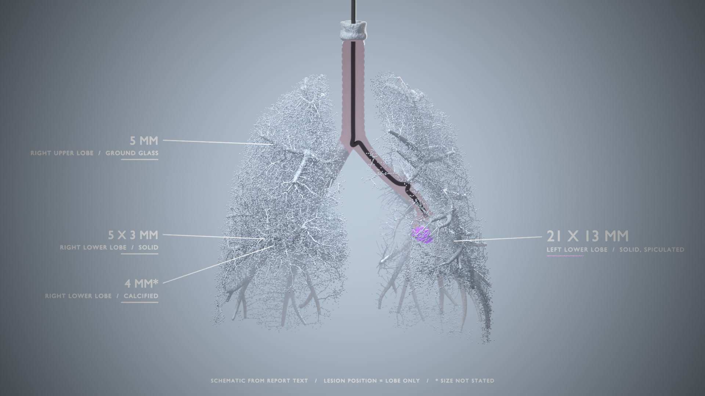
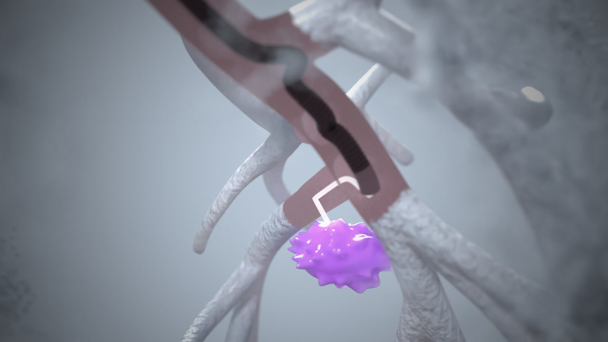

Lung Report Model
Proof of concept. Sample chest scan report text becomes an editable 3D lung model with a bronchoscope route.
Schematic only. Each lesion position comes from the lobe name in the report. This is a template body, not a patient.
Front view

Scope route
8.75 seconds. The scope moves down the trachea into the left lower lobe. Then the view changes to the target.
Target close-up

The scope stops where the airway becomes too narrow. A thin tool goes the last 15 mm through tissue to the nodule.
Interactive 3D model with headset mode
Headset mode: open this page in the browser of a virtual reality headset. Then use the ENTER VR button in the viewer.
One finger or left button rotates. Pinch or scroll zooms. Two fingers or right button move the view.
Findings from the report text
| Finding | Lobe | Size | Density | Margin |
|---|---|---|---|---|
| F1 | Left lower | 21 x 13 mm | Solid | Spiculated |
| F2 | Right lower | 5 x 3 mm | Solid | Not stated |
| F3 | Right upper | 5 mm | Ground glass | Not stated |
| F4 | Right lower | 4 mm * | Calcified | Not stated |
* The report gives no size for F4. The model uses 4 mm as a placeholder.
Input text
FINDINGS: LUNGS / AIRWAYS / PLEURA: Left lower lobe solid spiculated pulmonary nodule measures 2.1 x 1.3 cm (series 2, image 40). Additional solid pulmonary nodule of the right lower lobe measures 0.5 x 0.3 cm (series 2, image 74). 5 mm ground glass, parenchymal nodule in the right upper lobe. Calcified granulomata are demonstrated in the right lower lobe. Patent central airways. No pneumothorax or pleural effusion.
Sample sentences from public report examples. Not a real patient.
Limits
- The text parser uses fixed rules. It is a stand-in for a language model.
- The template has no mouth or larynx. The scope enters at the upper trachea.
- The fine bronchial branches are computer-generated. They are not from a scan.
- The route does not check the bronchoscope diameter.
- The images and the video are pre-rendered. The interactive model is real-time and has a headset mode.
- The headset mode is not yet tested on a real headset.
- The interactive model uses simpler shading than the rendered images.